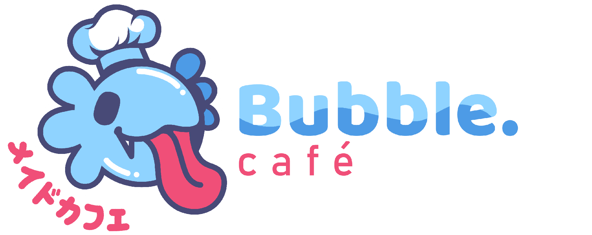
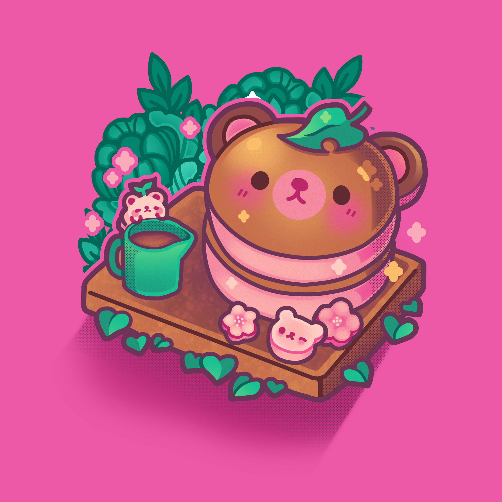
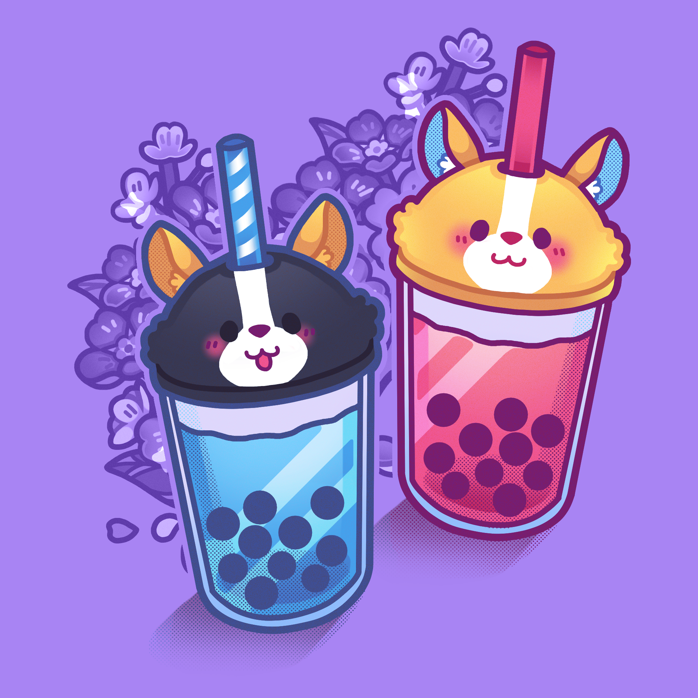

Tedibeakēki - (Bolo de Ursinho)
✨🐻 Um bolinho encantador em formato de ursinho, feito para conquistar olhares e paladares. Com massa fofinha de chocolate e recheio delicado de morango, ele une o aconchego do sabor intenso do cacau com a suavidade frutada do morango. Além de delicioso, seu formato de ursinho traz um toque lúdico e carinhoso, perfeito para adoçar momentos especiais ou tornar qualquer lanche ainda mais divertido. 🍫🍓

Koinu no ocha - (Chá de Cachorrinho)
🧋🐕✨ Nossas boba teas ficam ainda mais fofas com as exclusivas tampas de shiba-inu! Além do sabor irresistível das combinações de chás, frutas e bolinhas de tapioca, cada copo vem acompanhado de um simpático shiba sorridente, trazendo diversão e estilo para a sua bebida. Uma experiência deliciosa que conquista tanto pelo paladar quanto pelo visual encantador. 🌸🍓🥤